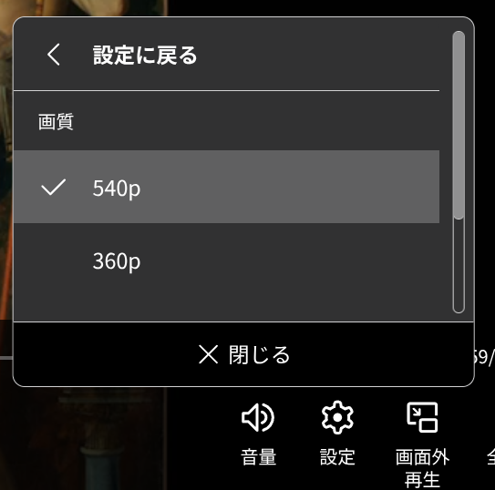

たたなこ
@tatanakots
@Mimiaomc Widevine DRM的话或许可以找到被dump出来的L1密钥，不过我没试过补全Widevine环境，不知道有没有对应的模块

MM 喵了个
@Mimiaomc
打开 NHK ONE（Web）却发现画质最高只有 540P
NHK 文档：
https://t.co/ShNQB5q8Hn
说我设备环境有问题
然后我就翻到了（来自 @did2memo 的【情報科学屋さんを目指す人のメモ】）：
https://t.co/KrSuXVDQm1
才发现是 DRM 的问题……没有硬件 L1 级 DRM
DRM 是坏东西啊……可是我只是想看 NHK…… https://t.co/LZPyeWJvHE